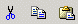

Cut
This command operates on the selected text/image. After executing it, the
selected text/image is removed from the document (cut) and placed into
the Clipboard from where it can be pasted either into the KTML3 Editable
Region
or into another editor. The command is accessible through the Cut button
or by using the shortcut keys “Ctrl+X”.
Note: In
Mozilla, the Cut command is not accessible from the toolbar, but only
by using the keyboard shortcut.
Copy
This command operates on the selected text/image. After executing it,
the selected text/image is copied to the Clipboard, from where it can
be pasted
either into KTML3 or into another editor. It is accessible through the
Copy button or by using the shortcut keys “Ctrl+C”.
Note: In Mozilla, the Copy command is not accessible from the toolbar,
but only by using the keyboard shortcut.
Paste
This command operates on the selected text/image or on the current pointer
position. After executing this command, the text/image from the clipboard
is placed into the KTML3 editor. If another image or text is already selected
upon clicking the Paste button, that image/text will be replaced by the
one from the Clipboard. It is accessible through the Paste button or by
using the
shortcut keys “Ctrl+V”.
Note: In Mozilla, the Paste command is not accessible from the
toolbar, but only by using the keyboard shortcut.